*This article was created with AI (ChatGPT-4o), with some additions of my own lol
I went to eat here in November 2024😄
Today I stopped by "Haneji no Eki" in Makiya, Nago, and had Okinawa soba at "Ganaha Soba" inside it~. The sign says in big letters "Original Soki Soba Shop," which shows quite a bit of confidence✨ But "Marutaka Soba" in Nago also called itself the "original," and "Gabusoka Shokudo" writes "the true-lineage soki soba"... Nago is right in the middle of a "soki soba originator war"😂 (in a good way!)
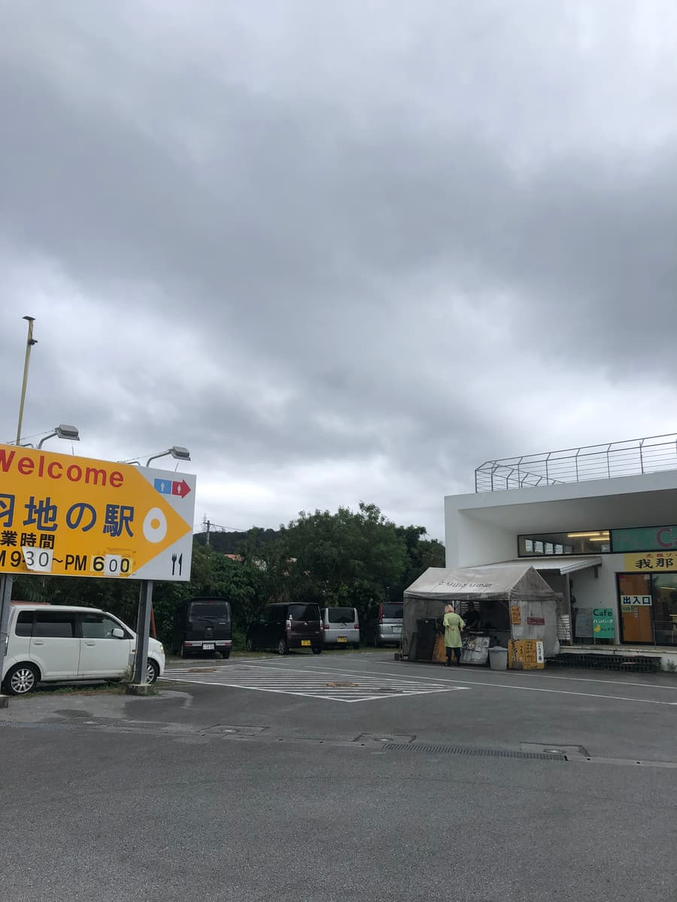
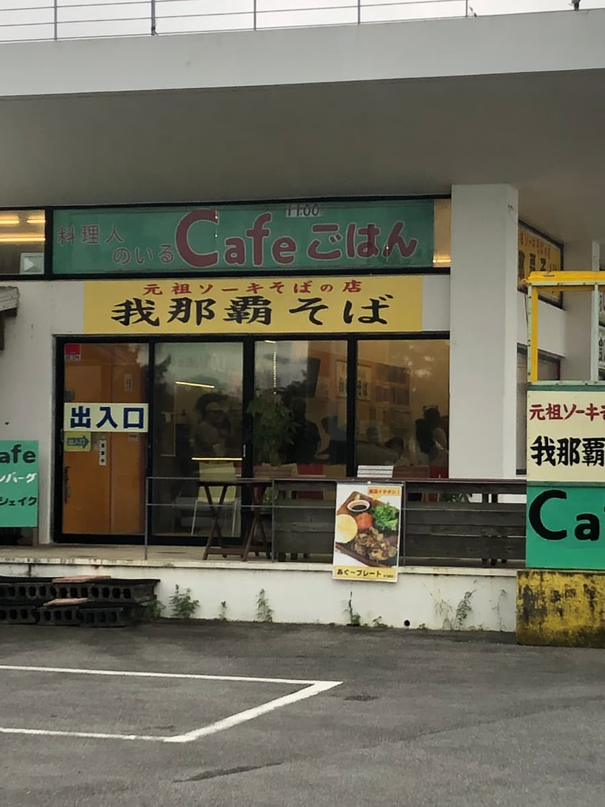
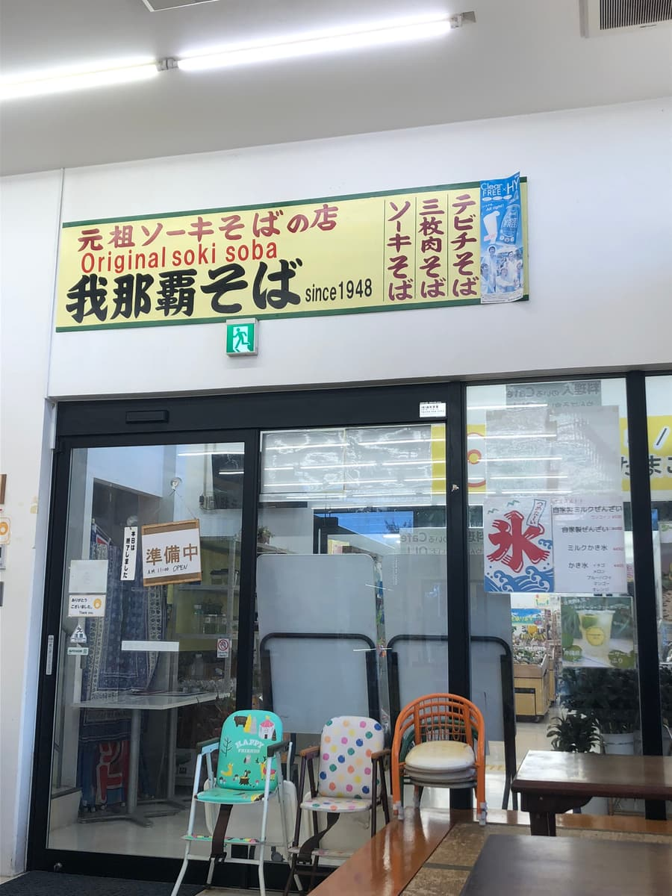
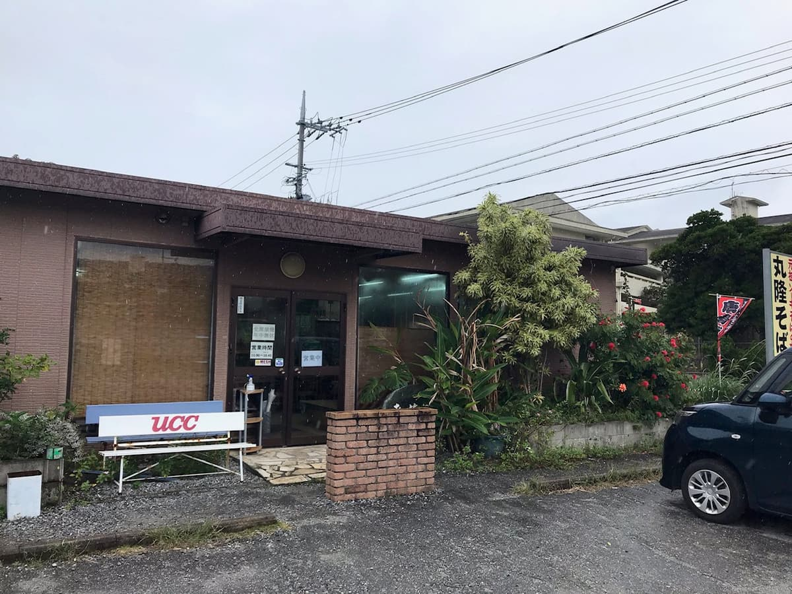
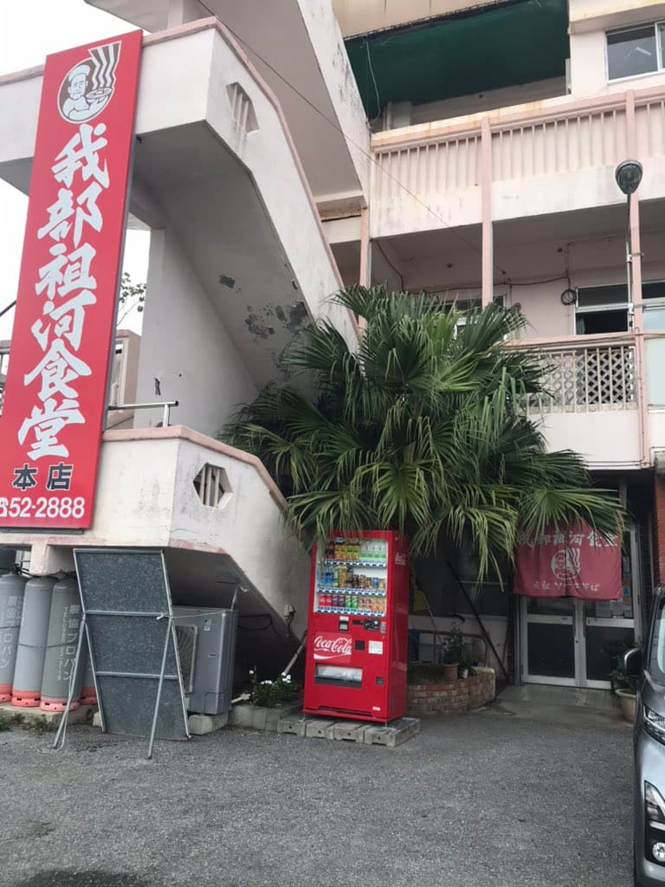
Well then, let me tell you about the all-important soba experience.
Inside, an old-fashioned diner feel coexists with the relaxed feel of a tourist facility, and it's quite comfortable ◎.
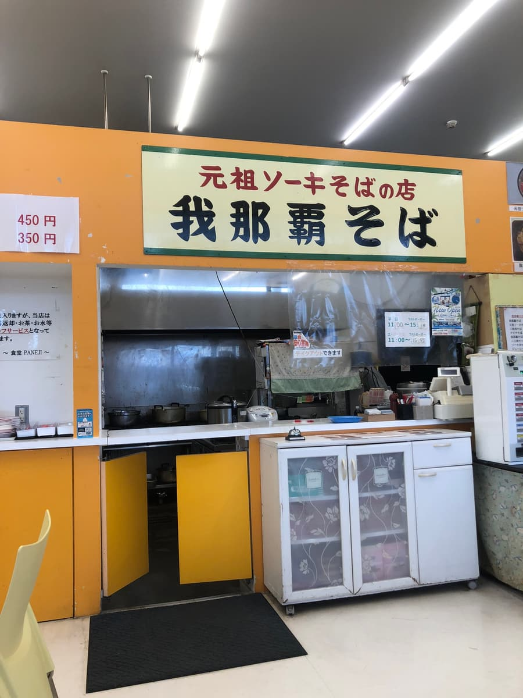
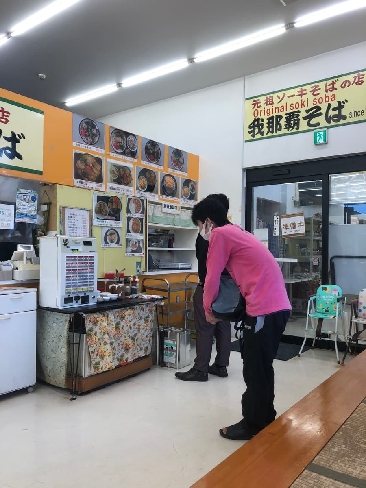
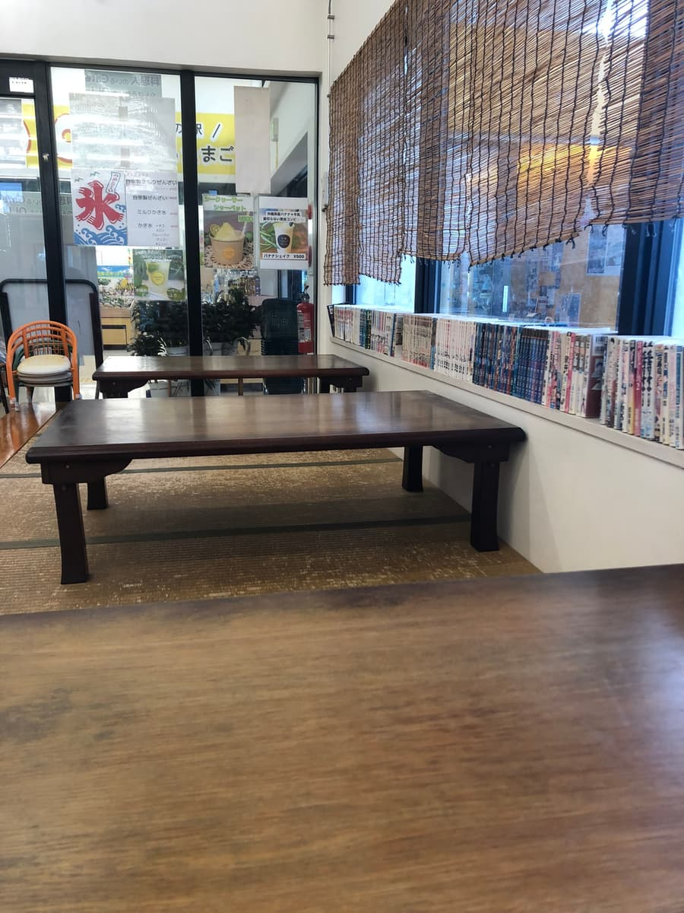
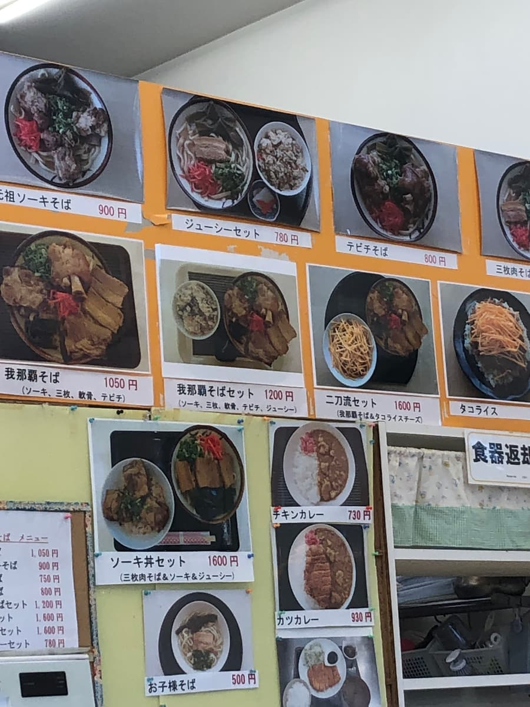
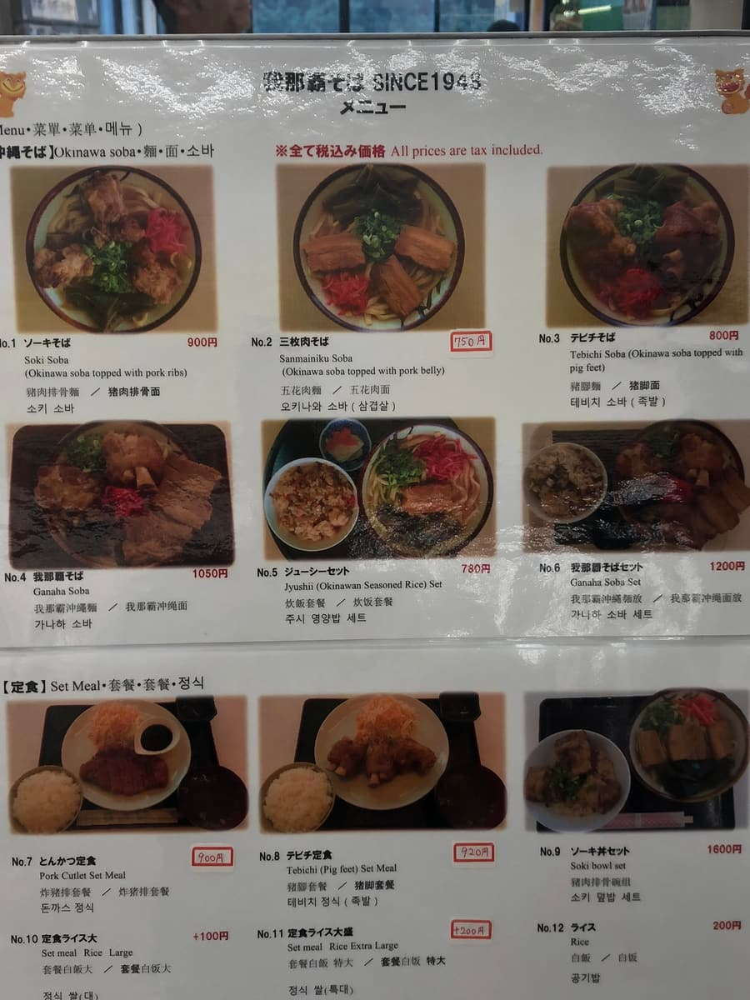
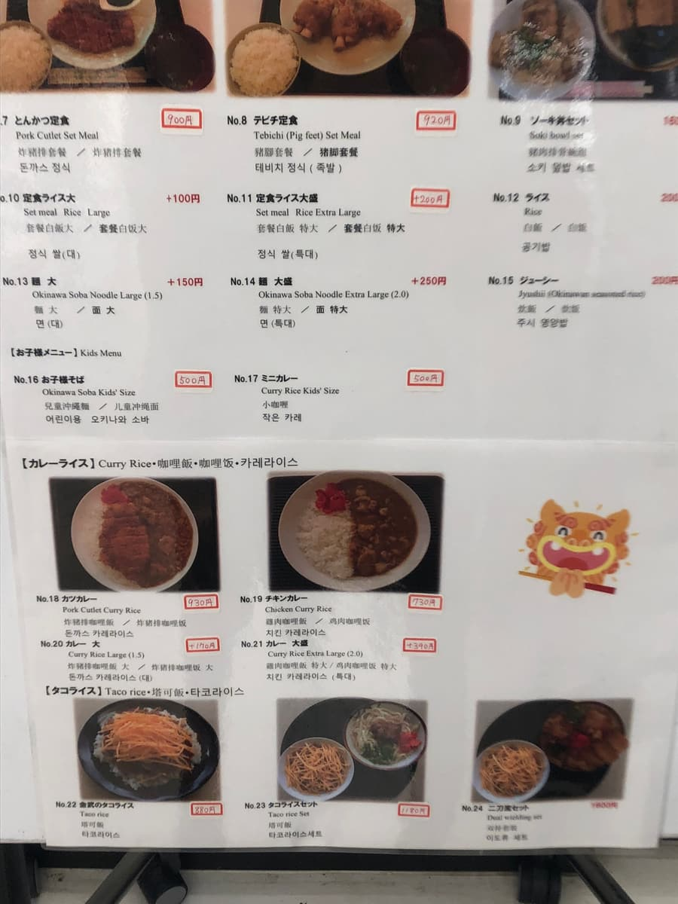
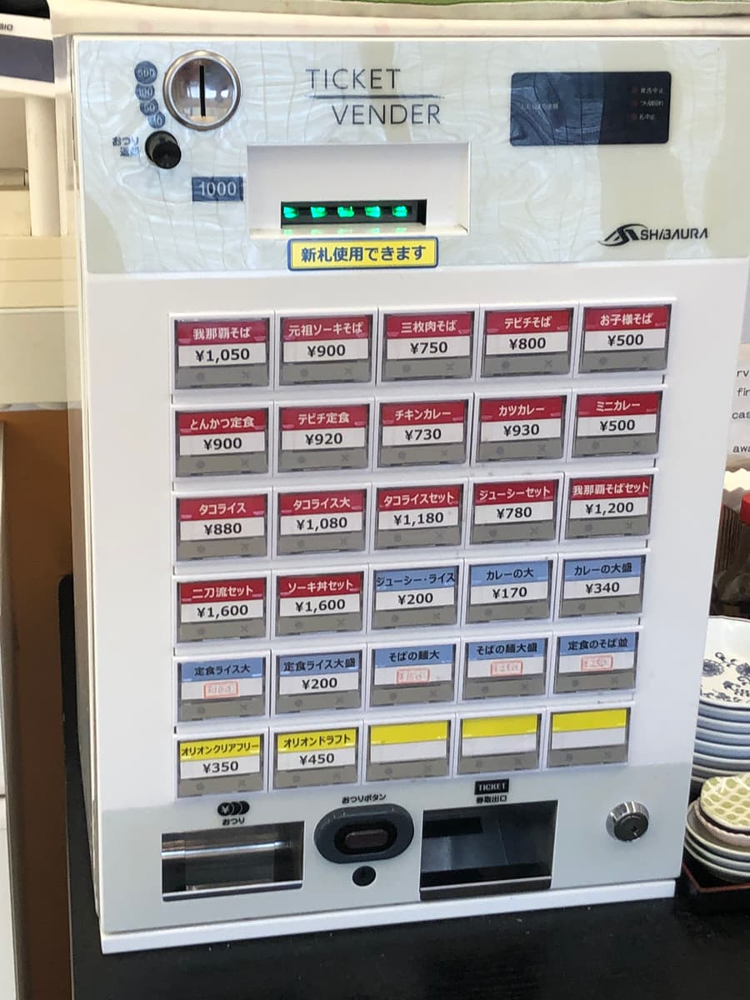
You order by ticket machine. There were so many menu items that I hesitated a bit, but this time I chose the signature dish, the "original soki soba (¥900)"! When they call it the "original," you just can't not order it~😆
After sitting down and waiting a while, a bowl appeared with just the right amount of steam. Ooh, there are three chunky soki rolling around on top! That's impactful. Kelp and green onion add color too, and it looks really appetizing. Itadakimasu🙏
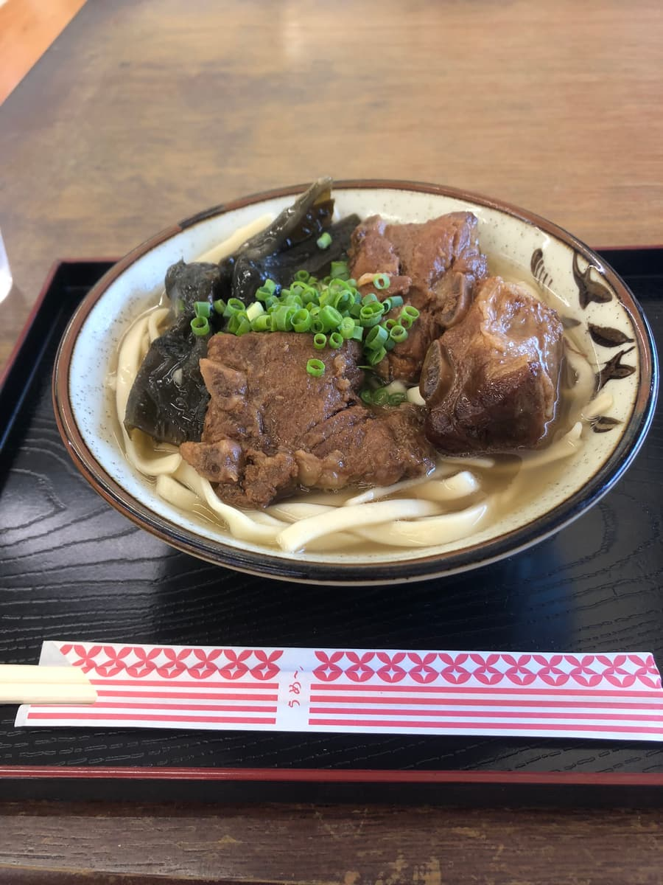
First, a sip of the broth. Yep, it's a combined pork and bonito broth. But rather than one of them coming to the front, it's a balanced broth where neither stands out. No strong personality, but it was an ordinary kind of taste that would probably appeal to everyone😊
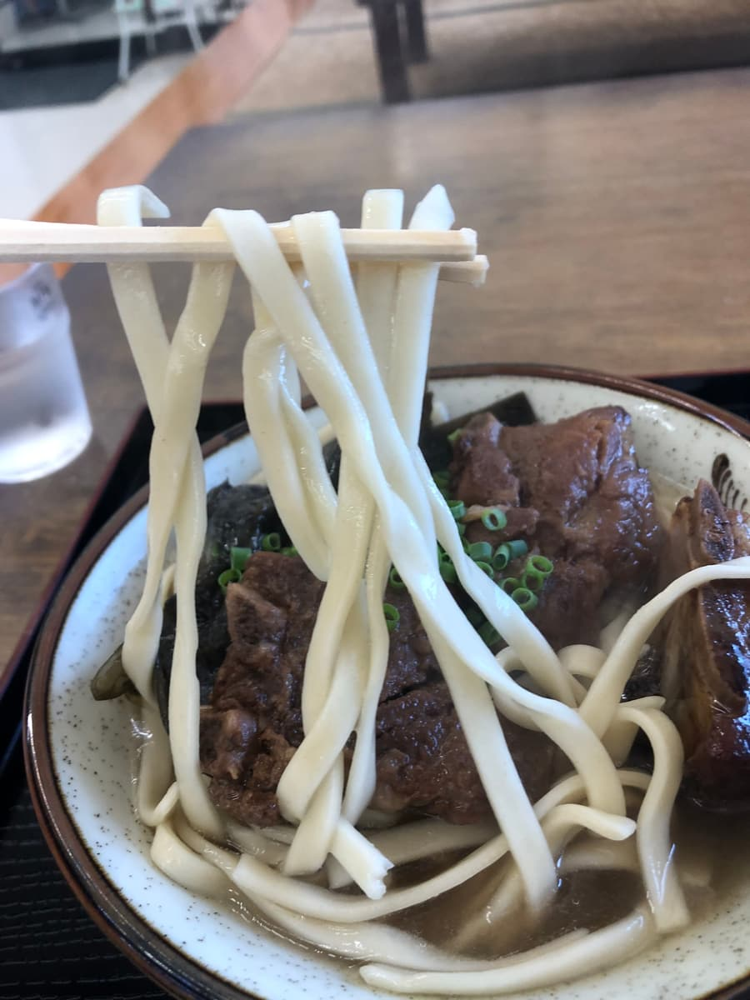
The noodles are thick, flat, and straight. On the soft side. The look of it with kelp as a topping reminds me of "Miyazato Soba"😄 The kelp topping is very Nago-like too, and nice! I think people who like the Miyazato Soba style will love it👍
And the soki. Three large cuts, with a perfect presence✨ They don't quite fall apart when you put them in your mouth... some sinewy texture remains, so they're satisfying to chew. The seasoning is on the light side. But honestly, I can't deny the impression that it's a little understated in terms of feeling special~😅
Overall, it's a gentle Okinawa soba of the kind locals would want to eat every day. Rather than being aimed at tourists, it feels close to everyday life, and I had a good impression.
Rating (9/15): All in all, it was plainly tasty Okinawa soba. When you visit Haneji no Eki, why not give it a try?😊
Noodles: ★★★☆☆（3）
Soup: ★★★☆☆（3）
Toppings: ★★★☆☆（3）